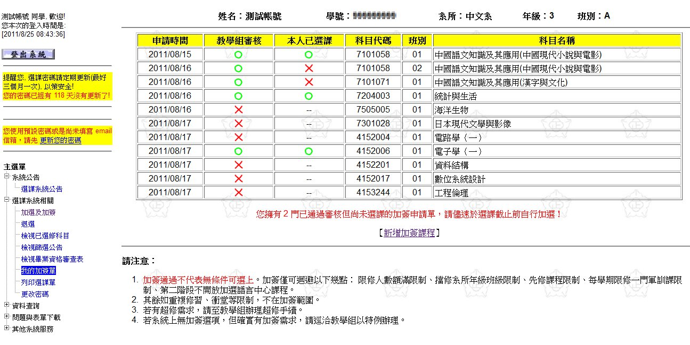

線上申請加簽功能說明
自 100 學年度 (2011/09) 起，加簽制度有重大變革。
原先純粹紙本的額滿加簽以及擋修加簽，將整合為單一的加簽，採線上申請紙本作業。
在第二階段選課期間，加選科目列表中部份科目會有「加簽」選項，表示使用者可申請加簽該科目，如下圖。
點選後將會進入確認畫面，確認後系統會產生該科目加簽單，使用者可將之列印後，
填寫加簽理由等欄位，經授課教師與開課系所主管簽名後，親自送至教務處教學組辦理，核可後於選課截止前自行選課。
另外，主選單中也會有「我的加簽單」選項，使用者可透過該功能，檢視已申請的加簽單辦理狀況。
